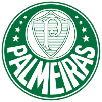
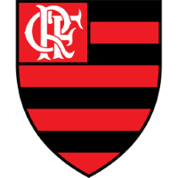
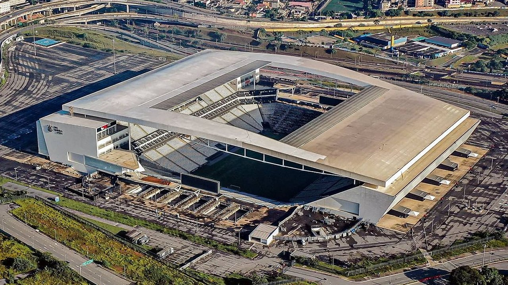
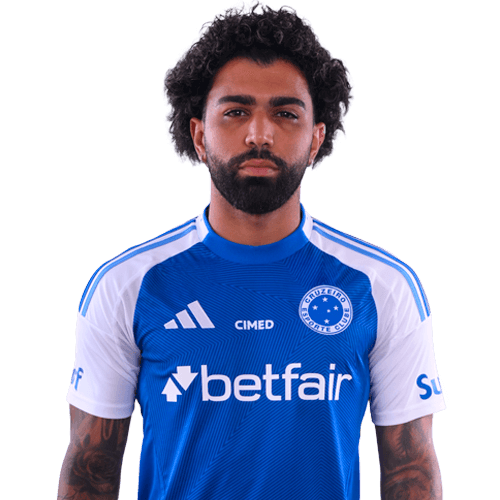

Estatística de futebol, sem ruído.
Design system do Brasileirão Stats. Fundo branco, texto grafite e um único verde para tudo que é ação ou destaque. Clique nos componentes: abas, filtros, busca e swatches respondem.
Cores
Verde-gramado escuro como cor de ação, cinzas com leve tom esverdeado como neutros. Âmbar e vermelho só carregam significado (empate, cartão, rebaixamento). Clique em uma cor para copiar o valor.
| Combinação | Amostra | Razão | AA |
|---|
Tipografia
Uma família só, Figtree: geométrica, limpa e legível em tamanhos pequenos. Números tabulares nas tabelas para as colunas alinharem. Títulos em peso 700 com espaçamento levemente fechado, corpo em 400.
Espaço e forma
Escala de 4px. Só dois raios de canto e nenhuma sombra decorativa: a hierarquia vem de bordas finas e de espaço em branco. Sombra só em menus flutuantes.
Botões e busca
Um botão primário por tela. Ícones Lucide, traço de 1.75px. A busca de clube abre com a tecla /.
Tabela de classificação
Barra fina à esquerda marca a zona e a legenda a explica, então a cor nunca é o único sinal. Números tabulares. Em 390px, as colunas secundárias somem e o essencial fica (posição, clube, jogos, saldo, pontos).
| # | Clube | J | V | E | D | SG | Pts | Últimos 5 |
|---|
Indicadores
Números grandes só quando o número é a informação. Sem ícones decorativos, sem gradiente.
Comparador de clubes
O elemento de destaque do produto. Barras simétricas partem do centro; o lado que lidera fica na cor cheia do clube, o outro em tom apagado. É o único movimento do site: as barras crescem ao entrar na tela ou ao clicar em Repetir.
Cabeçalho do clube
A cor oficial do clube aparece só aqui e no comparador. O resto do site continua verde. O texto sobre a cor do clube precisa passar em AA, então cores claras usam texto escuro.

Palmeiras
Nubank Parque · São Paulo (SP) · fundado em 1914
Imagens e créditos
Escudos, fotos de estádio e recortes de jogadores vêm do TheSportsDB. No projeto real, o script de coleta baixa os arquivos uma vez para public/img/, então o site não depende de link externo. Escudo sempre com texto alternativo vazio quando o nome do clube está ao lado, e com o nome quando aparece sozinho.



Fontes. Estatísticas e jogos: API-Football. Escudos, fotos de estádios e jogadores, cores e descrições dos clubes: TheSportsDB.
Escudos e nomes são marcas dos respectivos clubes. Projeto demonstrativo, sem fins comerciais e sem vínculo com a CBF ou com os clubes.
Gráficos
Recharts na implementação, com este estilo: eixos finos, sem grade pesada, verde para a série principal e verde claro para a comparação. Legenda direta, sem caixa.
Estados
Todo bloco de dados tem carregamento, vazio e erro. Mensagens dizem o que houve e o que fazer, sem pedir desculpa.
Nenhum clube encontrado
Confira a grafia ou busque pelo nome do estádio.
Estatísticas indisponíveis
Este clube não tem dados de estatística na temporada exibida.
Tokens para o Tailwind
Estes valores viram @theme no index.css do projeto.